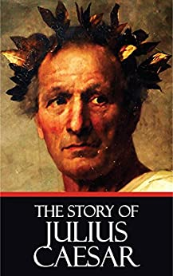

The Life and Death of Julius Caesar
By Shakespeare

The Life and Death of Julius Caesar is one of Shakespeare’s most welle —known and ofte —quoted plays, a classic story of loyalty, politics, murder and intrigue with some of the greatest oratory ever written.
The story begins in the streets of Rome in the year 44 BCE. The tribune Marullus, a government official chosen to represent the common people, asks the commoners why they are loitering in the streets, and a cobbler plainly replies: “we make holiday to see Caesar and to rejoice in his triumph.” Marullus mocks the mob for their fickle loyalties, since they used to be loyal to Caesar’s enemy, Pompey, who Caesar has now vanquished. He sends the commoners home with: “Run to your houses, fall upon your knees, / Pray to the gods to intermit the plague / That needs must light on this ingratitude” and proceeds to tear down the decorations the commoners have hung in Caesar’s honor. Alone, Marullus states his fear that Caesar has grown dangerously high in the esteem of the people.
But allow me to pause here, dear reader/listener, to briefly explain the underlying political state in Rome at the time (which will clarify several plot points along our journey through this play.) You’ve already heard two names important to the background of the story: Caesar and Pompey. In 61 BCE, these two men, along with a third, Crassus, formed the First Triumvirate of Rome — three men chosen to rule equally, and for a limited time; the Triumvirate was solidified by intere —marrying amongst each other’s families. However, human nature being what it is, each man soon began to act on behalf of his own personal ambitions for wealth, land and power. In 58 BCE, Caesar began his military campaigns, conquering, among others, Gaul (now Italy), and parts of Britain and France, all the while maintaining his power, in absentia, in the Roman political machine. In 53 BCE, Crassus died in a failed military invasion, eliminating him as a potential political threat to the remaining two leaders. During Caesar’s absence from Rome for nearly 10 years, his daughter – who had become Pompey’s wife – died, severing the tie between the remaining two members of the original Triumvirate. When Pompey was named the sole Consul of Rome, effectively cutting Caesar out, and married the daughter of Caesar’s enemy, the Triumvirate dissolved and the two men became known enemies. In 50 BCE, Pompey ordered Caesar to return to Rome and disband his armies. When Caesar refused, believing (probably rightfully so) that Pompey intended to capture and prosecute him, Pompey had Caesar declared a traitor to Rome. As a result, in 49 BCE, Caesar crossed the Rubicon River into Italy thrusting Rome into Civil War. A year later, Caesar defeated Pompey and it is here that Shakespeare’s story begins.
It is interesting to note that Caesar actually lived for almost four years after the death of Pompey, when he met and fell in love with Cleopatra, Queen of Egypt, all the while maintaining dictatorship of Rome. But that is another story, and Shakespeare didn’t mind playing with time, and so condenses several years of history into this two and a half hour play. So let’s get back to our story….
A flourish of trumpets announces the entrance of the victorious Caesar with a great crowd, celebrating the Lupercal, a fertility festival. Caesar encourages his wife Calpurnia to stand in the way of the virile Mark Antony, who is running in the Lupercal race; touching the runners brings fertility, and Caesar would like Calpurnia to provide him with an heir. As Caesar’s party continues toward the Capitol, a Soothsayer (a prophet who can see the future) calls out to Caesar “Beware the Ides of March.” Ides means the fifteenth day of the month. But Caesar ignores this warning and the procession continues.
As the crowd moves by, two Roman politicians remain behind – Cassius and Brutus, longtime friends and intimates of Caesar. Cassius accuses Brutus of being distant and withdrawn. He offers to be Brutus’ mirror, to help him see himself as others see him. Brutus admits he is afraid of Caesar’s growing popularity, and says he loves honor more than life itself. Cassius confirms Brutus’ fears saying that Caesar is a mere mortal – one whose life he saved once during a swimming contest – and yet now has come to be regarded as a god. Cassius reminds Brutus of Caesar’s physical weakness (now considered to have been epilepsy) and they marvel that this fallible man has risen so high. “The fault, dear Brutus, is in not in our stars,/ But in ourselves, that we are underlings,” says Cassius. The men are not fated to serve Caesar, they merely allow themselves to do so. Cassius fears that Caesar is being treated like a king; as free Romans they cannot abide the idea of kingly power being vested in one man, who would rule over them. Brutus promises to consider what should, if anything, be done. When Caesar returns he tells Antony he does not trust Cassius who has “a lean and hungry look.”
Brutus and Cassius get the attention of another noble Roman, Casca, who delivers news that during the celebrations, Mark Antony offered Caesar a crown three times, which Caesar refused each time, despite the cheering of the crowd. Then Caesar fell to the ground foaming at the mouth. The men fear Caesar only refused the crown as a political ploy, but really intends to become dictator of Rome, with the blessing of the people. Casca also tells that the Tribune Marullus, who we met at the beginning of the play, has been put to death for removing Caesar’s victory decorations. The men plan to meet again later and Cassius hatches schemes to further sway Brutus to join the plot he is hatching to unseat Caesar.
That night, storms and ill omens plague Rome. In the lighteninge —lit streets, men whisper about the strange things happening in the city. In the fearfulness of the storm, Cassius and Casca agree to conspire to rid Rome of Caesar. Cassius and his friend Cinna go to gather more plotters, and to leave antie —Caesar papers where Brutus will find them, hoping to convince Brutus of mounting public outrage against Caesar.
At Brutus’ home, his internal battle continues, when his servant Lucius brings him a letter, seemingly written by the citizens of Rome (but in fact it forged by Cassius) begging Brutus to strike against Caesar and against tyranny. By the time Cassius arrives at Brutus’ home with several other conspirators – Casca, Cinna, Metellus Cimber and Trebonius –, they find Brutus has decided to participate in their plot. When the men want to swear an oath, Brutus tells them oaths are not necessary when the justness of their cause spurs them as strongly as it now does. Cassius wants to kill Antony too, fearing he is as dangerous as Caesar, but Brutus disagrees. There is just cause to kill Caesar. “Let’s kill him boldy, but not wrathfully.” Too many unnecessary deaths will dishonor the cause, and the conspirators resolve – only Caesar dies.
When the men leave, Brutus’ wife Portia, begs him to tell her what has been on his mind, as she knows he has been distracted lately. Despite her eloquence and devotion, Brutus rebuffs her, saying “O ye gods, / Render me worthy of this noble wife.” One last conspirator, a sick Ligarius, comes to join the cause, “A piece of work that will make sick men whole.”
As thunder continues to rock Rome the next morning, the 15th of March, Caesar’s wife Calpurnia, insists Caesar should not leave the house. She reveals she has had nightmares in which she saw a statue of Caesar bleed, and watched as smiling men dipped their hands in the blood. Caesar, does not want to appear cowardly but eventually, to appease his frantic wife, he agrees to stay home. But Metellus Cimber arrives and cleverly spins Calpurnia’s dreams to appear as good omens of Caesar’s rise to power, so Caesar changes his mind – he will go to the Capitol. With Cassius, Brutus, Antony, and others they leave for the Senate.
On another street, the citizen Artemidorus stands, with a petition begging Caesar against going to the Capitol and naming the conspirators. Portia tries to send Lucius to bring back news from the Capitol, but she is so worried and inarticulate that her commands are unintelligible. The Soothsayer’s menacing predictions add to the sense of foreboding.
The mob again fills the streets of Rome as Caesar, in the company of the conspirators, enters on his way to the capitol. Artemidorus tries to give Caesar his petition, but Caesar refuses to read it when he’s told it is for his own benefit, choosing instead to give his attention to a matter of someone else’s need. When Metellus Cimber tries to kneel to Caesar, Caesar will not let him abase himself. Yet Caesar refuses to revoke the banishment of Metellus’ brother Publius Cimber, saying the banishment was just and it is right for him to stay constant to that decision. At a word from Casca – “Speak hands for me” – the conspirators fall upon Caesar, stabbing him 23 times, crying “Liberty! Freedom! Tyranny is dead!” A dying Caesar looks up at his friend, Brutus, among those who would have him dead. “Et tu, Brute? Then fall, Caesar” are his final words.
As Antony flees, the Senators react quickly – they must spin this story to their benefit before the crowd can react badly against Caesar’s death. Brutus suggests: “Stoop, Romans, stoop, / And let us bathe our hands in Caesar’s blood / Up to the elbows, and besmear our swords: / Then walk we forth, even to the markete —place, / And, waving our red weapons o’er our heads, / Let’s all cry ‘Peace, freedom and liberty!” Calpurnia’s dream has indeed come true.
Antony’s servant enters to ask for safe passage for his master to approach, which Brutus promises. When Antony returns, he shakes hands with each of the bloody conspirators but laments openly over Caesar’s body. The conspirators would like Antony to help convince the citizens of the justness of their murderous act. Antony asks permission to speak at Caesar’s funeral and, despite Cassius’ objections, Brutus agrees. Left alone, Antony asks for Caesar’s pardon and swears he will get revenge for Caesar’s murder with “Cry ‘Havoc’ and let slip the dogs of war.”
As the second half of the story begins, people rush about in final preparations for Caesar’s funeral. Antony speaks with a servant of Octavius Caesar – Julius Caesar’s nephew, whom the murdered man had summoned to Rome. Antony warns the servant to observe the temper of the crowd and cautions Octavius to remain outside the city.
As the Roman mob demands an explanation for Caesar’s death, Brutus addresses them, affirming his love for Caesar but claiming his death was necessary: “Had you rather Caesar were living and die all slaves, than that Caesar were dead, to lie all free men?” As Antony display’s Caesar’s body, the crowd cheers Brutus with: “Live, Brutus, live! Bring him with triumph home until his house. Give him a statue with his ancestors. Let him be Caesar!” Then Brutus turns the podium over to Antony.
“Friends, Romans, Countrymen,” begins Antony’s famous speech. Then, repeatedly referring to “the noble Brutus,” his speech becomes more and more sarcastic as he openly questions Brutus’ motivations for Caesar’s death. Antony reminds the crowd that Caesar brought much glory to Rome and refused the crown three times. He then describes, in detail, the death of Caesar and shows the crowd Caesar’s vicious wounds. As the crowd’s opinion begins to sway, Antony produces Caesar’s will, which he purposely hesitates to read until the crowd begs him to do so. Caesar has bequeathed a sum of money to every citizen of Rome, and land for public gardens. The citizens’ outrage turns to cries of “Revenge!” against Brutus and the conspirators. Antony learns that Octavius is already in Rome, while Brutus and Cassius have fled the city. War is unavoidable.
Things get ugly in the city of Rome. The mob runs across a poet named Cinna. Unfortunately for the poet, one of the conspirators was also named Cinna. The poet tries to explain he is not the same man, but the mob is in a state of agitation and tears the poor poet to pieces in revenge for Caesar’s death.
Meanwhile, Antony, Octavius and the Roman noble Lepidus are forming a Second Triumvirate to rule Rome. Their first order of business is deciding which traitors the new government will put to death. When Lepidus is sent to collect Caesar’s will, Antony shares with Octavius his disdain of their partner – the jockeying for power has already begun. But there is no time to lose, for the armies of Brutus and Cassius are gathering outside the city.
The scene flies to Sardis and the military camp of the conspirators, where dissent is also brewing. Cassius, arriving with his army, is described by Brutus as “A hot friend cooling.” Alone in Brutus’ tent, they have a heated argument when Brutus accuses Cassius of taking bribes and having “an itching palm,” but they ultimately reconcile. Brutus then reveals he is sick with grief, having received news that his wife Portia has committed suicide by swallowing fire – fearing Octavius and Antony, who have been putting to death those they label as traitors. As Cassius laments, Brutus expresses Roman stoicism, and the men make preparations for the impending battle to be held at Philippi. The military captains leave Brutus alone for the night, but sleep does not come easily to Brutus. The Ghost of Caesar appears to Brutus, promising to meet him on the battlefield the next day.
On the plains of Philippi, Antony and Octavius arrive with their armies. When Antony tries to give orders to Octavius, the younger man asserts his authority as a Caesar and refuses to take direction from Antony. When Brutus and Cassius arrive for a pree —battle parley, the men exchange heated insults and Octavius hurls defiance at the conspirators.
Cassisus calls his friend Titinius to him, confiding it is his birthday and sharing the vision of an omen: two mighty eagles who alit on the soldier’s banners, only to be replaced the next day by birds of prey. Cassius and Brutus discuss what they will do if their army loses; Cassius implies suicide is better than capture. A great battle rages. The spirit of Caesar seems to spur the Triumvirate’s cause. Cassius thinks he sees his men retreating and his tents set on fire. He sends Titinius riding off to investigate, and his servant, Pindarus, up the hill to report. When Pindarus cries that Titinius has been surrounded by horsemen who shout for joy, Cassius concludes he is captured and the battle lost. Calling Pindarus back, he orders him to obey his master and kill him with his own sword; Cassius dies, believing Caesar revenged. Pindarus, freed from his master, wishes his freedom had not been bought at such a high price. When Titinius returns with Trebonius, we learn that the horsemen surrounding him had been his friends, reporting of their army’s victory. Finding the body and realizing Cassius has misconstrued everything, Titinius kills himself with Cassius’ sword.
Brutus is led to the site of the dead bodies by Trebonius. Impressed by the dead men’s courage, he muses: “Are yet two Romans living such as these?” But the battle continues – there is no time to mourn. Antony’s men capture Metellus, who pretends to be Brutus, but Antony knows the truth – that Brutus fights on. Yet as the fighting continues, the end is near for Brutus and his few remaining men; total loss is imminent: “I know my hour is come.” Neither Lucius nor Clitus will help him, but Brutus convinces Strato to hold his sword so he might run upon it. Thus Brutus kills himself and Caesar is revenged – the Ghost can now rest in peace.
Octavius and Antony discover Brutus, dead. Antony declares: “This was the noblest Roman of them all: / All the conspirators save only he / Did that they did in envy of great Caesar; / He only, in a general honest thought / And common good to all, made one of them.” As Octavius and Antony prepare to celebrate their victory, peace has come to again Rome…for now.